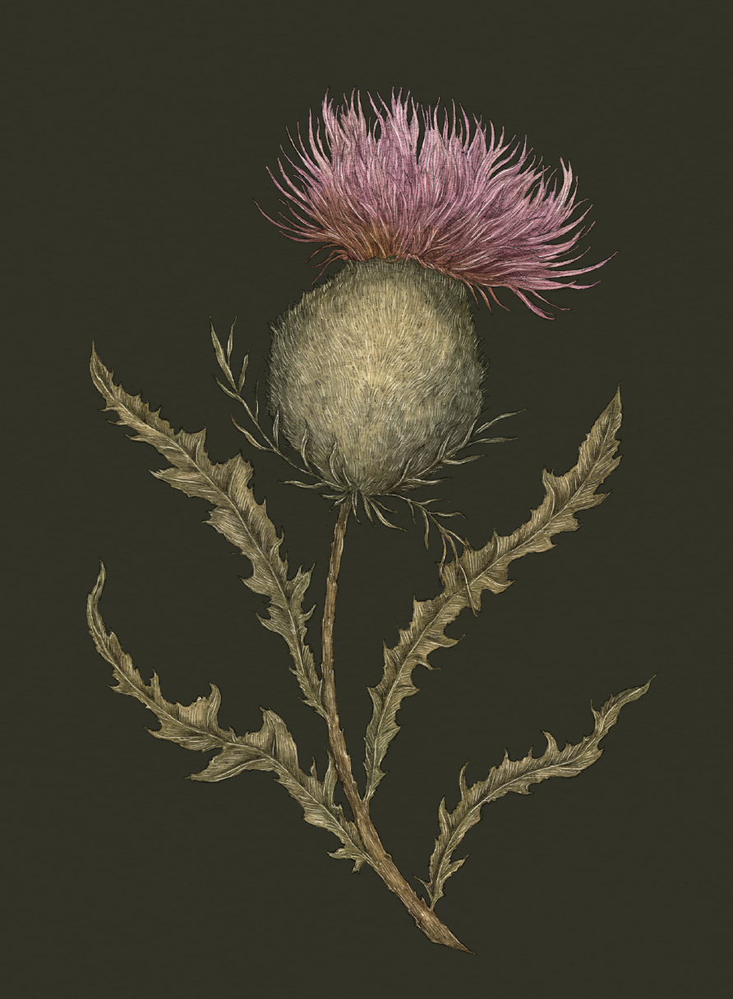

The Language of Flowers
Thistle

Thistle
Cirsium
Victoria's Definition: Misanthropy
Meaning
Misanthropy
Origin
It's no surprise that the spindly, prickly thistle is associated with misanthropy. Its meaning also
has biblical roots: in Genesis, when God cast Adam and Eve out of Eden, God told them that thorns and
thistles would grow from the land as part of their punishment.
Pair With
- Rosemary to indicate you see through someone's facade
- Pansy to show you're thinking of a friend going through a bitter separation